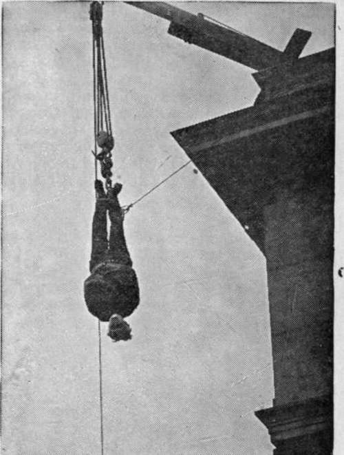
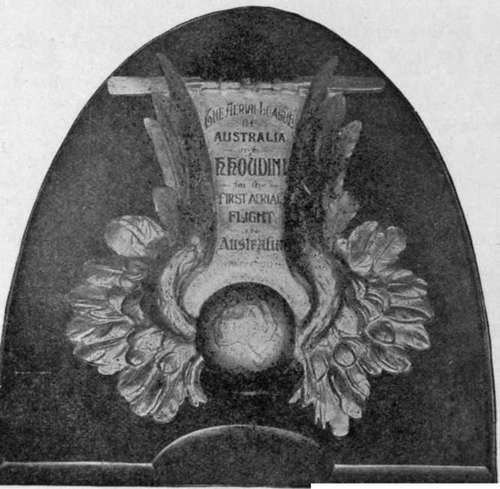

Wizard Tied In Jacket Is Free In 3 Minutes
Description
This section is from the book "The Adventurous Life Of A Versatile Artist: Houdini", by Harry Houdini. Also available from Amazon: The Adventurous Life of a Versatile Artist; Houdini.
Wizard Tied In Jacket Is Free In 3 Minutes
20,000 People see Houdini Thrilling Air Struggle.
(STRAPPED TIGHTLY BY GUARDS FROM MAYVIEW HE HANGS HEAD DOWN WARD.
Sun Building Is Scene. WHILE SPINNING DIZZILY FIFTY FEET ABOVE PAVEMENT HE ESCAPES FROM BONDS.
The Sun, Monday, Nov. 6th, 1916
Swaying, head downwards, like a grotesque human pendulum, 50 feet above the pavement in front of The Sun Building, Harry noudini, "handcuff king," defier of locks, bars and bonds, freed himself from the grip of a canvas, leather-reinforced straightjacket, in a fraction more than three minutes, shortly after 12-40 o'clock this afternoon.
The waving of his free hands and arms, that a crowd estimated at 20,-000 has seen bound by two attendants from the Mayview (old Mar-shalsea) Hospital for the Insane, told the watchers that Houdini had achieved one of the most unique feats in his strange career. As he was lowered swiftly to the ground, a great cheer arose, followed by another and another as he stood upright and bowed to the throng which not only packed the streets but filled every window and roof top within view of the scene.
Wizard Is On Time
Urbane, smiling, the elusive Houdini appeared in the office of "The Sun" at 12o,clock. R. D. Polling and H. Guthrie, the two attendants from Mayview detailed to truss him up, awaited him, and with them the straight-jacket, in a sat3hel.
Houdini shook hands with both men, speaking humorously of his position as substitute for the deranged persons the two Attendants ordinarily handle. The two men, clad in the white uniforms used by them when on duty, surveyed their voluntary victim noted his short, stocky form, his powerful arms and shoulders, his steady, bright eyes.
Both have had long experience in binding frenzied men. Both were determined, they told Houdini, to use the full resource of that experience in binding him. They knew the prowess of the man the1" had to deal with. They did not comment upon the outcome of the test.
They were there, they said, to do their work as best they knew how.
Houdini urged speed of action, and absolute surety in fastening tnv innumerable straps th« straight-jacket.
"Treat me," he advised, smilling, "as you would the most dangerous of the criminal insane."
Every Move Is Watched
The strait-jacket was taken out of the satchel. The handcuff king examined it carefully, while a group of persons looked on. Not a move he made was lost. He dropped the piece of canvas and leather carelessly, smiled again, and said:
" Very good. Are we ready ?"
It was almost 12-30 o'clock. Houdini glanced out the window, and again his characteristic, quiet smile came to his face as he saw Wood street and Liberty avenue congested from wall to wall with closely packed, restless humanity.
Then a white-clad attendant on each side, he went downstairs to the street to be bound.
A suppressed shout came from the crowd as he appeared in the doorway of The Sun building. It increased in volume as with the attendants and two members of The Sun" at 12 o'clock. R. D. Polling wagon that had been pulled up on the pavement, and that was serving as a stage.
Above him, like a gallows, a single beam projected from a window at the top story of the building, and a rope swung clear, coiling in sinister fashion at his feet.
Houdini had removed the outer clothing from the upper part of his body.
" Ready,1 ■ he said.
Straps Are Fastened
The two attendants pressed close. His arms were inserted in the long, closed sleeves of the strait jacket. One of the attendants clasped him about the body, as if fearing he would make some mad effort to escape. The other standing behind him, fastened strap after strap, with a steady deftness that made both for security and speed, and revealed long practice.
"Make it tight," came the quiet word from the prisoner.
The man's knees went up for purchase in the small of Houdini's back. Using apparently every ounce of strength in his broad-shouldered six-foot body, the attendant drew the big strap through the buckle until it would not yield even a sixteenth of an inch more. He caught it there and made it fast.
Then the arms of the prisoner were crossed over his body, and the ends of those closed sleeves were brought around in back. Again the knee was brought into use. Again the strap was pulled to its highest tension.
The crowd watched, stirred with a constant murmur and movement.
Then Houdini's ankles were fastened to the rope, by a special appliance that prevented injury, but insured safety.
A word was spoken. The two attendants seized the bound man's body. Workmen drew the ropo steadily through the pulleys. Houdini's feet went up, and as his body cleared the platform, it was released.
Hangs In Mid-Air
The handcuff king dangled head downward. Each moment he was drawn higher, swaying slightly, spinning dizzily. Up-up, rjast the windows in the fifth story of the Sun building. Houdini was drawn.
Then He Hung Still
Only for a second. While watchers gleamed in the crowd below, the handcuff king was seen to struggle, not frantically, but with a steady, systematic swelling and contracting of muscles, and almost imperceptible lithe, wrigglings of the torso.
The struggle went on. One minute -two-then three-
Would he do it$ Hundreds in the crowd undoubtedly were asking that question. From above came an inarticulate shout. The muffled arms writhed one after another over Houdini's head. His hand, still encased in the sleeves of the strait-jacket, fumbled quickly and effectively with the buckles at his back. Another contortion and the strait-jacket slipped down over his chest, over his head, and was flung from his arms to the street, in a crumpled heap.
Houdini Was Free
The arms waved. Houdini had triumphed-as he always triumphs. Less than a minute later, while the crowd's cheers still rang against the grey walls of surrounding buildings, he slipped down the face of the building to the platform. The attendants received him in a twinkling, and he stood erect, unconsciously throwing back his broad shoulders.
The little man with the touch of grey at his temples bowed quietly, still with that imperturbable smile. And the crowd cheered him again, before it began slowly to dissolve.
Houdini duplicated this feat at the Boston Post, Boston, Mass., December 22, 1921, drawing the biggest crowd that ever crushed into Tre-mont Street.
Trophy won by Houdini.
The accompanying illustration is the prize offered by the Australian Aerial League for the first successful flight on a heavier than air mac-nine. Won by Houdini March 16, 1910, Digger's Rest, near Melbourne Australia. Houdini piloted his own machine-a Voision Biplane equipped with a E.N.V. 60.80 H.P. Motor. During his Australian Tour Houdini nr^de 18 successful flights.
LONDON, ENGLAND
Holborn Empire Besieged By Crowd Inside And Outside-unparalleled Scenes Witnessed In High Holborn- Police Reserves Called Out
A packed house, to show its disapproval of the management's action, remains at the Holborn Empire, from 2:00 to 9:00 P. M., waiting for Houdini's appearance as advertised. Police forces were called out as the matinee crowd, refusing to leave the theatre, the evening crowd blockaded traffic, being unable to gain admittance. Unparalleled scenes witnessed in High Holborn.
Continue to:
- prev: Minister Uses Houdini's Name For Sermon
- Table of Contents
- next: The Performer, December 15, 1910. A Stand For Justice: Houdini's Protest
Tags
magic, escapology, Houdini, wizard, escape artist, lock, handcuff